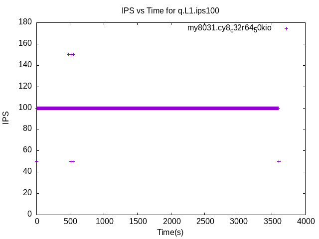

These have results per 1-second interval for: insert rate (IPS), max insert reponse time, query rate (QPS) and max query response time.
The results are from 1 client while the test may have N clients where N > 1.
The test is run with a rate limit for the number of inserts/s. In some cases the DBMS is unable to sustain that rate. When a DBMS can sustain that rate IPS will be a horizontal line.
Contents
my8031.cy8_c32r64_50kio: IPS
my8031.cy8_c32r64_50kio
my8031.cy8_c32r64_50kio: max insert response time
my8031.cy8_c32r64_50kio
my8031.cy8_c32r64_50kio: QPS
my8031.cy8_c32r64_50kio
my8031.cy8_c32r64_50kio: max query response time
 my8031.cy8_c32r64_50kio
my8031.cy8_c32r64_50kio
fbmy8028.cy9c_c32r64_50kio: IPS
fbmy8028.cy9c_c32r64_50kio
fbmy8028.cy9c_c32r64_50kio: max insert response time
fbmy8028.cy9c_c32r64_50kio
fbmy8028.cy9c_c32r64_50kio: QPS
fbmy8028.cy9c_c32r64_50kio
fbmy8028.cy9c_c32r64_50kio: max query response time
fbmy8028.cy9c_c32r64_50kio
pg151.cx7_c32r64_50kio: IPS
pg151.cx7_c32r64_50kio
pg151.cx7_c32r64_50kio: max insert response time
pg151.cx7_c32r64_50kio
pg151.cx7_c32r64_50kio: QPS
pg151.cx7_c32r64_50kio
pg151.cx7_c32r64_50kio: max query response time
pg151.cx7_c32r64_50kio